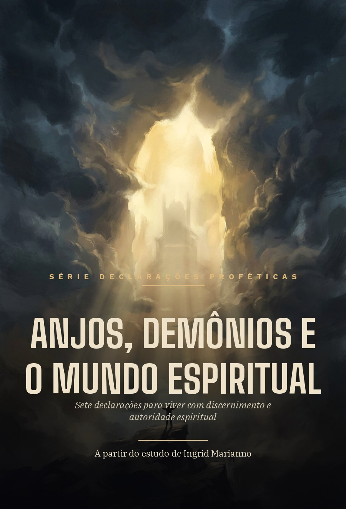
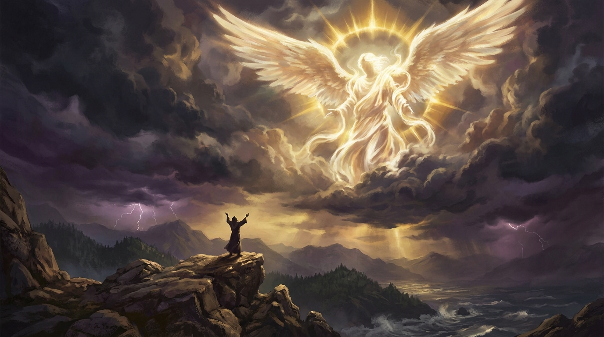
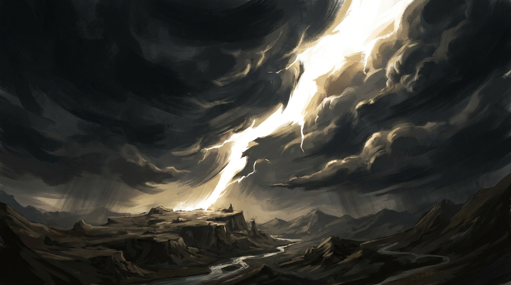

“Então Moisés subiu ao monte, e a nuvem cobriu o monte... e a aparência da glória do Senhor era como um fogo consumidor no cume do monte, aos olhos dos filhos de Israel. E entrou Moisés no meio da nuvem, depois que subiu ao monte.”

Toda pessoa esbarra, mais cedo ou mais tarde, numa pergunta sobre o que não se vê. Um medo sem causa natural, uma conversa que pesou mais do que as palavras ditas, uma casa onde a mesma briga parece se repetir de geração em geração. A Bíblia nunca tratou a realidade como algo que termina no que os olhos alcançam.
As sete declarações deste livro nascem do estudo de Ingrid Marianno sobre anjos, demônios e o mundo espiritual, e caminham numa direção específica: autoridade espiritual não é convite para temer o tamanho do inimigo, é convite para conhecer o tamanho do trono. Cada capítulo termina numa declaração, uma frase pensada para ser dita, não só lida.
Este resumo condensa cada capítulo e devolve as sete declarações no formato para o qual foram escritas. Cada uma vem acompanhada de uma imagem original, construída ao redor da mesma ideia central do capítulo.
Antes de estudar qualquer poder espiritual, vale fixar uma posição. Paulo escreve aos efésios que Deus sentou Cristo acima de todo principado, autoridade, poder e domínio, não entre eles. A diferença entre acima e entre muda a leitura inteira do resto do livro: nenhuma estrutura espiritual, por mais barulhenta que seja, ocupa o mesmo patamar da autoridade de Jesus.
Isso pede uma distinção que a própria Bíblia traz. Poder é a capacidade de fazer alguma coisa, autoridade é o direito de governar. Um assaltante armado tem poder de causar medo, um policial devidamente investido tem autoridade. Os demônios reconheciam Jesus antes de qualquer pessoa reconhecer, "sei quem tu és, o Santo de Deus", registra o evangelho de Marcos, porque o mundo espiritual responde a autoridade legítima, não a discurso religioso.
Poder e autoridade
capacidade de agir, de causar efeito. Demônios têm.
direito de governar. Só existe uma soberania, e ela é de Deus.
O relato de Eliseu é um dos mais úteis do Antigo Testamento para falar de discernimento. O servo acorda, vê um exército cercando a cidade e entra em desespero. Eliseu vê a mesma cena e ora por outra coisa: não que o exército suma, mas que os olhos do servo se abram. Quando isso acontece, ele enxerga cavalos e carros de fogo ao redor do profeta. A batalha não mudou de tamanho, a visão do servo é que mudou.
Esse detalhe evita um erro comum. Discernimento espiritual não é a mania de enxergar demônio em cada contratempo. É a capacidade de distinguir com precisão o que está de fato acontecendo. Nem todo problema é ataque, algumas portas fecham porque Deus fechou, e algumas dificuldades nascem só das próprias escolhas. Confundir as três coisas produz tanto medo quanto ignorar todas elas.
O que discernimento não é
ver oposição espiritual atrás de qualquer contratempo comum.
distinguir consequência, decisão de Deus e ataque real.
Tiago escreve uma ordem em duas partes, e a ordem das partes importa. Primeiro, sujeitar-se a Deus. Só depois, resistir ao diabo. Boa parte do desconforto que sentimos quando o assunto é batalha espiritual vem de tentar pular direto para a segunda parte: quer autoridade sem submissão, quer expulsar sem antes se deixar governar.
Em Atos 19, sete filhos de um sacerdote chamado Ceva tentam usar o nome de Jesus como fórmula, sem relação nenhuma com Ele. A resposta do espírito é direta: "conheço Jesus, e sei quem é Paulo, mas vocês, quem são?" Não faltava vocabulário correto. Faltava posição. O mundo espiritual não responde a linguagem religiosa bem articulada, responde a autoridade legítima.
A ordem de Tiago 4:7
primeiro a Deus, sem atalho.
depois, e a partir dessa posição.
A Bíblia descreve anjos trazendo mensagens, protegendo, executando juízo e fortalecendo servos de Deus. Um anjo tira Pedro da prisão em Atos 12, outros ministram a Jesus depois do deserto, Gabriel chega com recados específicos. É tentador, diante disso, tratar anjos como recurso disponível para os nossos próprios pedidos. A Bíblia não sustenta essa leitura.
O Salmo 103 chama os anjos de valorosos em poder, que executam as ordens do Senhor, e o verbo importante ali é obedecer a Deus, não a nós. Isso muda a forma de orar. Em vez de comandar um anjo diretamente, uma oração mais alinhada com o texto pede que o próprio Deus mobilize o que for necessário para cumprir o Seu propósito. A confiança não está no mensageiro, está em quem envia.
Anjos nas Escrituras
Gabriel trazendo um recado específico.
o anjo que tira Pedro da prisão em Atos 12.

A arma mais antiga do inimigo não é força, é mentira. Em Gênesis 3, a serpente não ataca Eva fisicamente, ataca aquilo que ela acredita. "Foi isso mesmo que Deus disse?" é a primeira pergunta registrada de uma longa história de tentar reescrever a percepção de alguém sobre Deus, sobre si mesmo e sobre o próprio futuro.
Paulo chama esses ataques de dardos inflamados. Um dardo não precisa matar na hora, precisa incendiar um território. Pensamentos como "você não vai conseguir" ou "Deus esqueceu de você" funcionam do mesmo jeito: começam pequenos e, se não forem vencidos ainda no pensamento, viram incêndio emocional inteiro. É por isso que a verdade entra como escudo antes de virar espada.
Três alvos comuns da mentira
quem Ele é e o que Ele realmente disse.
sua identidade e seu valor.
o que ainda é possível.

Existem batalhas individuais e existem batalhas que atravessam uma família inteira: padrões, ciclos, comportamentos que se repetem, ambientes emocionalmente adoecidos. É tentador atribuir todo padrão familiar repetido a uma maldição, mas a Bíblia pede mais equilíbrio do que isso. Algumas coisas são mesmo oposição espiritual, outras são comportamento aprendido, outras são só consequência de escolhas repetidas por gerações.
Independente da origem, existe uma verdade que atravessa as três possibilidades: em Cristo é possível interromper ciclos. Quando Josué declara "eu e a minha casa serviremos ao Senhor", ele faz mais que uma afirmação de fé, ele estabelece um altar. E altar define prioridade: aquilo diante do qual uma família se curva, com o tempo, passa a governar essa família inteira.
O que muda quando o altar muda
o que se repetia sem ser questionado.
o que passa a governar a partir de uma decisão.
Paulo não termina a armadura de Deus com "lutem", termina com "permaneçam". Existe uma categoria de guerra espiritual que não se vence avançando, se vence continuando. Daniel descreve uma estratégia específica do inimigo contra os santos: desgaste. Não uma explosão única, um cansaço acumulado, pressão atrás de pressão, até alguém dizer "eu não aguento mais".
Isso muda o que significa ser inabalável. Não é ausência de lágrima. O Salmo 126 descreve alguém que sai chorando enquanto semeia e volta com alegria trazendo os feixes: ele está chorando, mas está andando. A diferença entre desistir e permanecer não é sentir menos, é continuar o movimento mesmo sentindo. Depois de fazer tudo, o chamado é para ficar de pé.
Duas formas de guerra
romper, tomar posição, mudar o cenário.
continuar andando mesmo sem a resposta ainda ter chegado.
Depois de sete declarações sobre anjos, demônios e autoridade espiritual, o objetivo nunca foi produzir mais medo do inimigo. Foi produzir mais consciência de Cristo. Conhecimento espiritual não deveria terminar em fascinação por batalha, deveria terminar em posicionamento.
Isso não significa vasculhar cada situação atrás de um demônio escondido, nem depender de manifestação angelical para sustentar a fé. Significa desenvolver confiança em quem governa os céus, com discernimento em vez de paranoia, autoridade sem arrogância e profundidade sem se afastar da Palavra.
A revelação central deste estudo é simples de dizer e exige uma vida inteira para se sustentar: Jesus reina. E porque Ele reina, é possível permanecer.
As sete declarações, em uma frase cada